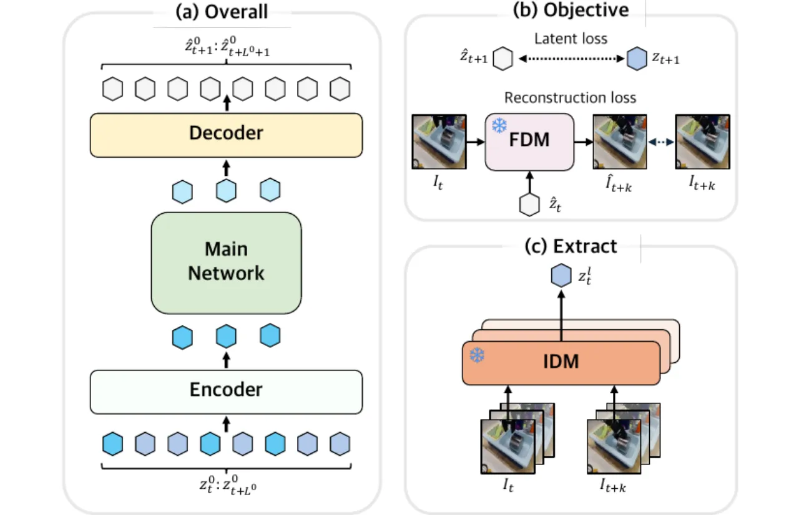
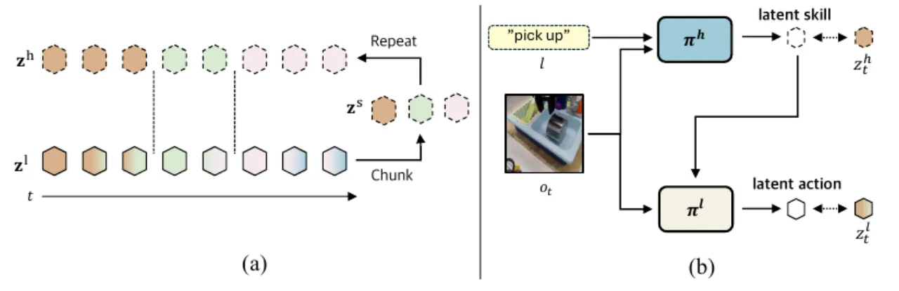
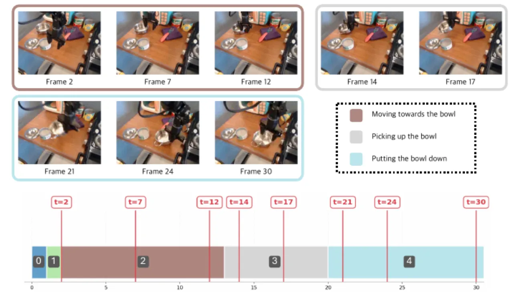
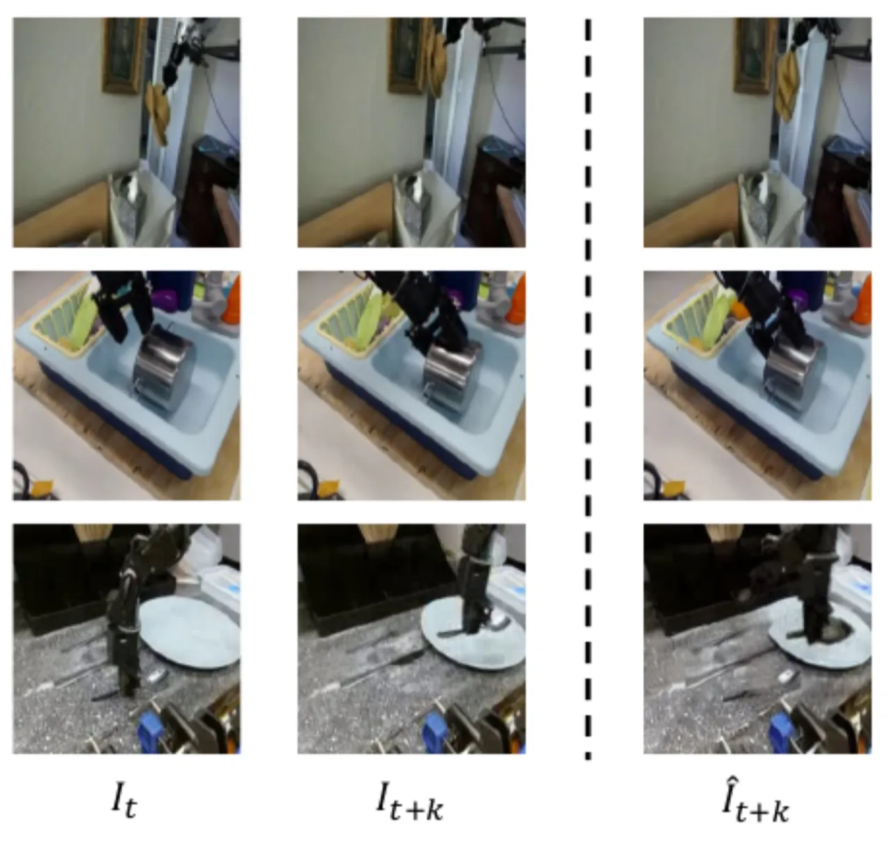

现有 Latent Action Models (LAMs) 擅长从视频中提取低层动作，但受限于短时域建模，无法捕捉更高层次的"技能"结构。HiLAM 引入动态分块机制 (Dynamic Chunking)，将低层 latent actions 自动聚合为可变长度的 latent skills，并通过层次化策略实现显著的数据效率提升。
Latent Action Models (LAMs) 通过 Inverse Dynamics Model 从观测视频中推断帧间 latent action，无需人工标注动作标签。然而，现有方法几乎全部聚焦于短时域帧间运动，对视频中本已存在的高层技能结构视而不见。
"existing latent action models are largely limited to short-term motion. As a result, they can capture low-level dynamics from observation-only data but often miss higher-level structure, such as temporally extended skills. This exposes a key gap where actionless videos contain not only primitive motions but also high-level skills that remain underutilized."
此前方法要么预设固定数量的 skill vectors（如 BUDS、SkillDiffuser），要么将固定长度的低层动作序列编码为 skill（如 SPiRL），均无法适应现实世界中技能时长自然变化的特性。HiLAM 的目标是：从无标签视频中自动提取可变长度、无需预先定义 skill set 的层次化 latent skills。

HiLAM 由两个阶段组成：首先在大规模无标签视频上预训练层次化 latent skill 模型；然后在目标任务中微调低层策略。核心创新在于 Dynamic Chunking Mechanism，将低层 latent action 序列自适应地分段，得到可变长度的高层 latent skill 表示。
给定观测视频 $\mathcal{V}$，首先用预训练 Inverse Dynamics Model (IDM) 提取低层 latent action 序列 $\mathbf{z}^l$。随后将其输入 H-Net 架构：

利用提取的 latent skills 和 latent actions 作为 pseudo-labels，同时训练高层策略 $\pi^h$ 和低层策略 $\pi^l$：
两个策略均基于 BAKU 架构，语言编码器为 T5 encoder。预训练默认使用 Something-Something V2（人类手持物体操作视频），数据处理为 observation-only（丢弃原始动作标注）。
在 LIBERO 仿真 benchmark 上评估，共 4 个子测试套件（Spatial、Object、Goal、Long），每套 10 个任务各提供 50 条专家演示。基线为 BAKU（当前最优）。预训练数据使用 Something-Something V2（人类视频）、Droid 和 BridgeV2（机器人视频）。预训练和微调各 100k 步。
| Suite | BAKU | HiLAM | 提升 |
|---|---|---|---|
| LIBERO-Spatial | 0.89 | 0.97 | +0.08 |
| LIBERO-Object | 0.99 | 1.00 | +0.01 |
| LIBERO-Goal | 0.95 | 0.97 | +0.02 |
| LIBERO-Long | 0.86 | 0.94 | +0.08 |
| Fine-tuning 数据量 | BAKU | HiLAM |
|---|---|---|
| 10% | 0.23 | 0.45 |
| 30% | 0.67 | 0.74 |
| 50% | 0.71 | 0.84 |
| 80% | 0.86 | 0.87 |
| 100% | 0.86 | 0.94 |
论文原文指出："With only 10% of the demonstrations, BAKU achieves a 23% success rate, whereas HiLAM achieves 45%, nearly doubling performance. With 50% of the demonstrations, HiLAM reaches 84%, comparable to BAKU trained with 100% of the data."

在 LIBERO-Long 上的消融实验（均使用 100% 微调数据）：

"our experiments are primarily conducted in simulated environments such as LIBERO. Validating the framework through real-world experiments would further demonstrate the effectiveness of the proposed method."
"to ensure computational efficiency during temporal modeling, HiLAM utilizes a pretrained IDM. However, training the entire architecture end-to-end could potentially lead to a deeper joint understanding of both low-level motion patterns and high-level skills."
论文指出运动线索与语言指令提供的是正交而非平行的信息，两者的结合（尤其是在复杂任务如家具组装中）有望进一步提升技能发现的质量。将层次化 latent action 建模与自然语言结合是有前景的未来方向。（论文原文："incorporating language represents a promising direction for future research"）